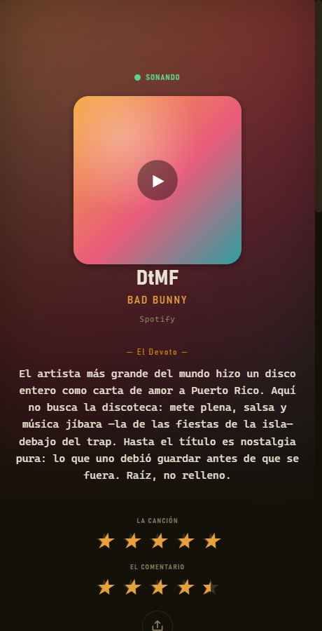
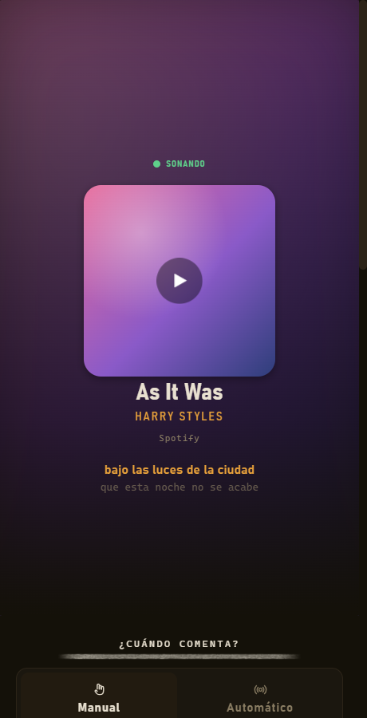
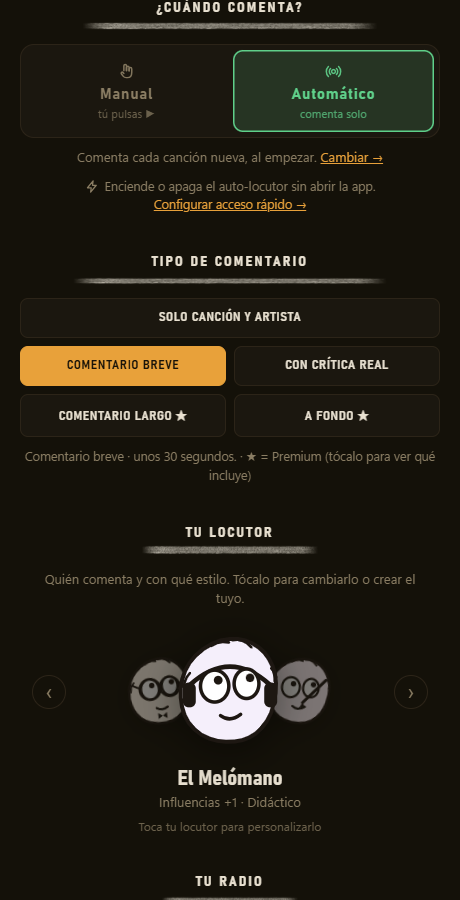
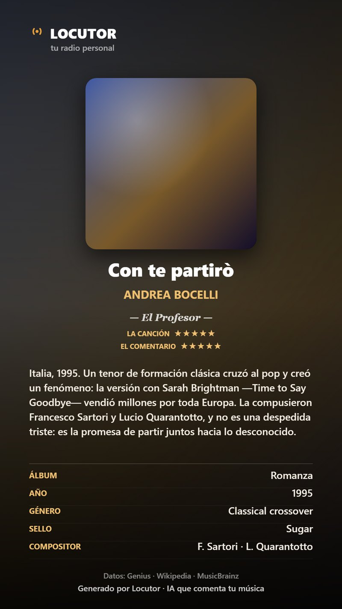
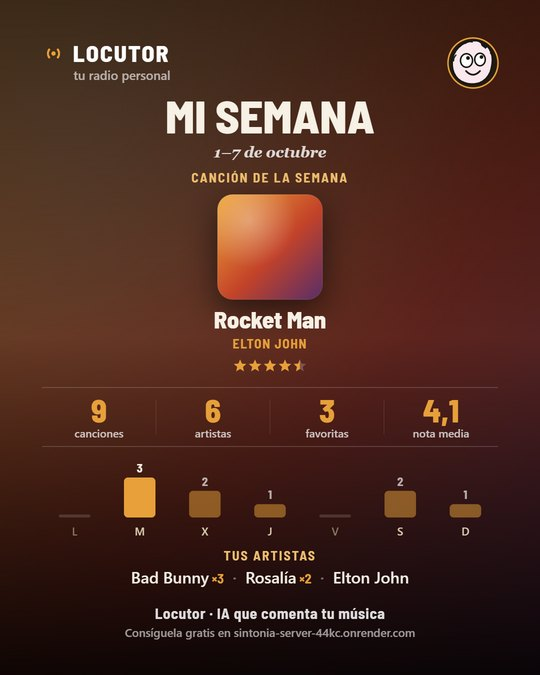
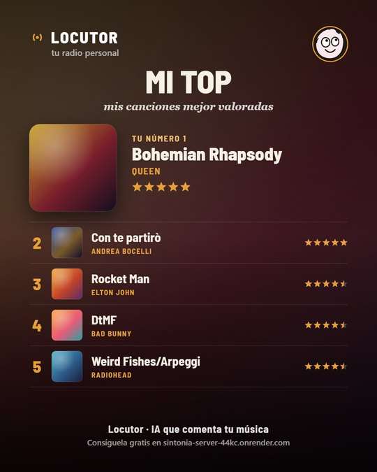
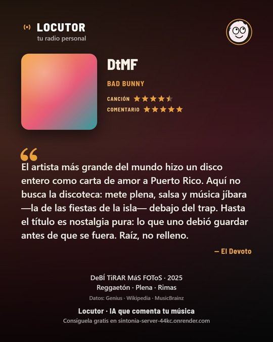

Unos locutores con IA comentan en voz alta lo que suena en tu ordenador, con datos de fuentes de referencia. Sin micrófono, sin permisos, y gratis con tu propia clave.
Windows 10/11 · Sin micrófono · No da ningún permiso · Gratis

Tu locutor tiene personalidad: reacciona al verso que suena, decide contigo cuándo habla y sabe de lo que habla.

La letra sincronizada resalta la línea exacta que suena en cada momento, y tu locutor entra por lo que dice ese verso. Como un karaoke con quien te lo explica.

En Manual, pulsas ▶ sobre la carátula y comenta. En Automático, comenta solo cada canción nueva —ponlo y olvídate—: una de cada dos, cada una o dos veces por canción. Y elige en qué se fija: la letra, la producción, la historia…

No habla por hablar. Antes de comentar, reconoce la canción y busca los datos en fuentes de referencia.



Guarda el comentario como una Carta —la canción con todo: carátula, tus estrellas, el comentario y la ficha del disco— o compártelo como una Cita, pensada para redes.
Nueve personalidades listas —o crea la tuya: su enfoque, su tono y su personalidad.
Voz natural gratis (Microsoft), la voz de tu propia IA, o premium con ElevenLabs / Cartesia. Una por locutor.
Aprende tus gustos entre sesiones y los referencia con naturalidad. Tu radio, cada vez más tuya.
Un análisis por aspectos —la letra, la producción, la historia…— que te guardas en PDF, con su carátula y tu nota. En Premium.
Un juego con preguntas sobre TUS canciones, sacadas de lo que ya te han contado y de sus fuentes.
Gemini, Groq, Mistral (gratis), OpenAI o Claude. Si tu IA va saturada o sin cupo, prueba sola su modelo ligero u otra de tus claves.
Sin configurar nada raro. Funciona desde el primer momento; con una clave de IA gratis, comenta de verdad.
En Spotify, YouTube Music o lo que uses. Locutor reconoce solo lo que está sonando, por Windows. Sin micrófono.
✓ empieza gratisTu locutor comenta la canción en voz alta. O ponlo en Automático y comentará solo cada canción nueva.
Sin clave nombra las canciones con datos de sus fuentes. Con una gratis y sin tarjeta (Gemini, Groq o Mistral) las comenta con IA: la app te guía y la reconoce sola.
Elige el que va contigo —o crea el tuyo desde cero.
Conecta la canción con su linaje: de dónde bebe y a quién marcó.
Te enseña a oírla: un par de cosas que no habrías notado, sin que parezca una clase.
Cómo se hizo: quién la produjo, la decisión de estudio y la toma que se quedó.
La mira con los ojos del fan de siempre: la cara B, el directo legendario, el detalle que solo sabe quien la quiere.
El verso que gira el sentido, lo que confiesa quien canta.
Elige su enfoque, su tono y hasta la forma de hablar de alguien.
Locutor no usa el micrófono y no graba sonido. Solo lee el título y el artista de lo que ya suena, para poder comentarlo. No da ningún permiso —ni cámara, ni archivos, ni cuentas—. Tu clave se guarda cifrada en tu propio equipo, nunca en el servidor. Nada de publicidad, nada de vender datos.
La IA la pones tú (tu clave). Gratis va de sobra para empezar; Premium desbloquea el comentario a fondo y quita el límite diario.
La IA es siempre tu clave (Gemini, Groq o Mistral tienen opción gratis). Premium solo desbloquea los modos avanzados de la app; no guardamos tus claves en el servidor.
No. Locutor solo lee el título y el artista de la canción que ya está sonando, a través de Windows. No accede al micrófono ni graba ningún audio, y no pide ni da ningún permiso.
Sí, la tuya propia — y es fácil: pega tu clave y la app la reconoce sola. Hay varias gratis y sin tarjeta: Gemini (aistudio.google.com), Groq (console.groq.com) o Mistral (console.mistral.ai). También valen OpenAI o Claude. Puedes guardar varias: si una se queda sin cuota, la app usa otra sola.
Locutor funciona como un buscador bien documentado: antes de comentar, consulta fuentes de referencia —Genius, Wikipedia, MusicBrainz, Last.fm e iTunes— y se apoya en ellas. Cada tarjeta te enseña de dónde sale cada dato.
Sí. Funciona con Spotify (gratis o Premium), YouTube Music y la mayoría de apps que muestran la canción en Windows. Locutor solo necesita saber qué suena.
No: tu locutor comenta canciones. Si lo que suena es un podcast, te lo dice y no se pone a comentarlo como si fuera un tema.
Varias, y eliges una por locutor: la voz natural gratis (Microsoft, cientos de voces), la voz de tu propia IA (OpenAI, Gemini o Groq), o voces premium con tu clave de Cartesia o ElevenLabs. También la voz de Windows sin conexión.
Premium (4,99€/mes) desbloquea el comentario largo y a fondo, las voces premium y el test musical sin límite, y quita el tope diario. La IA sigue siendo tu clave; Premium paga los modos avanzados de la app.
Muy pronto. Estamos rematando la versión para móvil. De momento, Locutor funciona en Windows 10 y 11.
No en nuestro servidor. Tu clave se guarda cifrada en tu propio equipo y se usa directamente contra tu proveedor de IA. Puedes borrarla, junto a tu historial, desde Ajustes → Borrar mis datos. Nada de publicidad ni de vender datos.
Descárgala para Windows y deja que tus canciones tengan quien las cuente.
▶ Descargar para Windows · GratisWindows 10/11 · Sin micrófono · Se instala y se abre solo
Al terminar la descarga, ábrelo: se instala solo y Locutor se abre al terminar. La primera vez Windows avisa (“editor desconocido”): pulsa Más información → Ejecutar de todas formas.